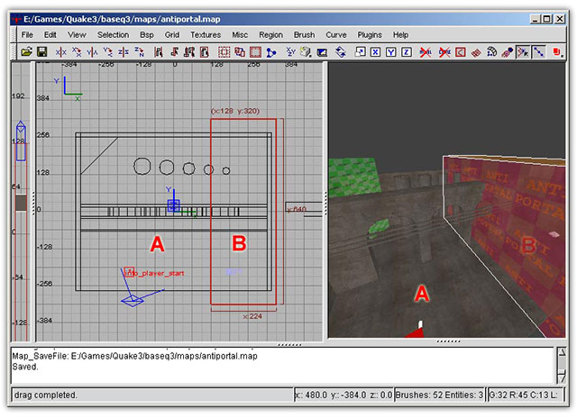

All surfaceparm keywords are preceded by the word surfaceparm as follows: surfaceparm fog or surfaceparm noimpact.
These keywords change the physical nature of the textures and the brushes that are marked with them. Changing any of these values will require the map to be re-compiled. These are global and affect the entire shader.
It should be noted that some of these surface parameters will change both the surface as well as the content of an object (surfaceparm water, for example). Shaders containing content altering surface parameters should usually be used on all sides of the object.
Many of these keywords are only used in "common" shaders (baseq3/scripts/common.shader), which are editor specific shaders used by the level designer. Such keywords are usually not used for the design of custom assets.
Originally, surfaceparm's were part of the previous chapter since they are actually Q3Map2 specific keywords. I've moved them into their own chapter for the sake of being easier to reference, since both this and the previous chapter were getting too long.
This keyword applied to a texture on a brush, patch or model will cause the lighting phase of the Q3Map2 process to use the texture's alpha channel as a mask for casting static shadows in the game world.
Design Notes:
Alphashadow does not work well with fine line detail on a texture. Fine lines may not cast acceptable shadows. It appears to work best with well-defined silhouettes and wider lines within the texture. Most of our tattered banners use this to cast tattered shadows.
With Q3Map2, it is possible to increase the resolution of the lightmap receiving the shadows at the cost to video memory. This can be achieved with the q3map_lightmapSampleSize keyword on the shadow receiving shader or by creating a func_group of the shadow receiving brushes and adding the _lightmapScale key with a floating-point value for the scale of the lightmap.
Works like hint brushes in that it creates BSP nodes, but unlike hint, it blocks vis by not creating a portal at the split. This is designed to be used with large terrain maps to block visibility without having to resort to tricks like sky or caulk brushes penetrating the terrain and throwing ugly shadows.
Players in part A of the map will not be able to see into part B and vice-versa. You can walk through the antiportal just fine. Note that this also blocks light. There are two caveats: They are opaque to light, and if aligned to another BSP cut (such as blocksize or the origin) they will not function correctly. Don't align it with anything else (like blocksize or another brush face) and it'll block vis. This keyword is found in "common/antiportal" so you shouldn't need to specify this. "common/antiportal" was added by ydnar, so if you're missing this shader, it is included with the latest version of Q3Map2.
A brush marked with this keyword functions as an areaportal, a break in the BSP tree. It is typically placed on a very thin brush placed inside a door entity (but is not a part of that entity). The intent is to block the game from processing surface triangles located behind it when the door is closed. It is also used by the BSPC (bot area file creation compiler) in the same manner as a clusterportal. The brush must touch all the structural brushes surrounding the areaportal. This keyword is found in "common/areaportal" so you shouldn't need to specify this.
Blocks bot movement only. Other game world entities and human players can pass through a brush marked botclip. The intended use for this is to block the bot but not other players or projectiles. This keyword is found in "common/botclip" so you shouldn't need to specify this.
Design Notes:
Careful use of botclip in a map can greatly reduce the complexity of the .aas bot navigation file, resulting in "smarter", more efficient bots.
A brush marked with this keyword function creates a subdivision of the area file (.aas) used by the bots for navigation. It is typically placed in locations that are natural breaks in a map, such as entrances to halls, doors, tunnels, etc. The intent is keep the bot from having to process the entire map at once. As with the the areaportal parameter, the affected brush must touch all the structural brushes surrounding the clusterportal. This keyword is found in "common/clusterportal" so you shouldn't need to specify this.
This surface attribute causes a brush to be ignored by the Q3Map2 process for generating possible break-points in the BSP tree. Generally speaking, detail brushes are usually set in the editor, so you shouldn't need to specify this.
Read as "do not enter". Like clusterportal, this is a bot-only property. A brush marked with donotenter will not affect non-bot players, but bots will not enter it. It should be used only when bots appear to have difficulty navigating around some map features. This does not physically stop the bot from entering a region (as with botclip). Bots will not enter the area on their own but may, for example, be blasted into the region with a rocket launcher. This keyword is found in "common/donotenter" so you shouldn't need to specify this.
Design Notes:
donotenter can be (sparingly) used in space maps around the void or around lava/slime in certain places where bots have an overwhelming tendency to commit suicide (lemming style).
Team Arena specific: if a player lands on a surface that uses a shader with this parameter, a puff of dust will appear at the player's feet. Note that the worldspawn entity must contain the "enabledust" key with a set value of "1".
This will cue different sounds (in a similar manner to metalsteps) and cause blood to appear instead of bullet impact flashes. Actually, the code for this was never fully implemented by id Software. It remains half-finished so unfortunately it doesn't work.
fog defines the brush as being a "fog" brush. This is a Q3Map2 function that chops and identifies all geometry inside the brush. The general shader keyword fogparms must also be specified to tell how to draw the fog.
When Q3Map2 calculates the vis data, it tries to place portals in places in the map in an attempt to limit the potential viewable set (PVS). Brushes marked by a hint shader are used to manually place portals to force a break in the PVS. This keyword is found in "common/hint" so you shouldn't need to specify this.
Supposedly used to allow the player to climb vertically. This is not functional in Quake III Arena.
Assigns to the texture the game properties set for lava. This affects both the surface and the content of a brush.
Causes the Q3Map2 light stage to use the texture's RGB and alpha channels to generate colored alpha shadows in the lightmap. For example, this can be used to create the colored light effect cast by stained glass windows. This can be used with surfaceparm alphashadow.
The min/max bounds of brushes with this shader in a map will define the bounds of the map's lightgrid (model lighting). Make it as small as possible around player space to minimize bsp size and compile time. This keyword is found in "common/lightgrid" so you shouldn't need to specify this. "common/lightgrid" was added by ydnar, so if you're missing this shader, it is included with the latest version of Q3Map2.
The player sounds as if he is walking on clanging metal steps or gratings. Other than specifying flesh (doesn't work), metalsteps, nosteps, or default (i.e. specify nothing) it is currently not possible for a designer to create or assign a specific sound routine to a texture. Note: If no sound is set for a texture, then the default footsteps sound routines are heard.
Blocks monster movement. Not functional in Quake III Arena.
The player takes no fall damage if he lands onto a texture with this surfaceparm. This keyword is found in "common/cushion" but you may want to specify this on certain shaders (jump pads, for example).
Read as "No Dee-Light". A texture containing this parameter will not be affected or lit by dynamic lights, such as weapon effects. An example in Quake III Arena would be solid lava.
A texture marked with nodraw will not visually appear in the game world. Most often used for triggers, clip brushes, origin brushes, shaders with cull none or cull disable and so on. This keyword is found in "common/nodraw" so you shouldn't need to specify this.
When a player dies inside a volume (brush) marked nodrop, no weapon is dropped. The intend use is for "Pits of Death." Have a kill trigger inside a nodrop volume, and when the players die here, they won't drop their weapons. The intent is to prevent unnecessary polygon pileups on the floors of pits. This keyword is found in "common/nodrop" but you may want to specify this on certain shaders (fog volumes in pits, for example).
World entities will not impact on this texture. No explosions occur when projectiles strike this surface and no marks will be left on it. Sky textures are usually marked with this texture so those projectiles will not hit the sky and leave marks.
Projectiles will explode upon contact with this surface, but will not leave marks. Blood will also not mark this surface. This is useful to keep lights from being temporarily obscured by battle damage.
Design Notes:
Use this on any surface with a deformVertexes keyword. Otherwise, the marks will appear on the unmodified surface location of the texture with the surface wriggles and squirms through the marks.
This texture does not have a lightmap phase. It is not affected by the ambient lighting of the world around it. It does not require the addition of an rgbGen identity keyword in that stage.
The player makes no sound when walking on this texture.
This attribute indicates a brush, which does not block the movement of entities in the game world. It applied to triggers, hint brushes and similar brushes. This affects the content of a brush.
Used on the "origin" texture. Rotating entities need to contain an origin brush in their construction. The brush must be rectangular (or square). The origin point is the exact center of the origin brush. This keyword is found in "common/origin" so you shouldn't need to specify this.
Blocks player movement through a nonsolid texture. Other game world entities can pass through a brush marked playerclip. The intended use for this is to block the player but not block projectiles like rockets. This keyword is found in "common/clip" so you shouldn't need to specify this.
Design Notes:
playerclip is often useful for "smoothing" out the geometry of the map, preventing the player from snagging on objects. It is also used in open sky areas of maps, preventing the player from flying too high and seeing the "Hall of Mirrors" effect at the bottom of the cloud layer.
Surfaces using a shader with this parameter will always be vertex lit. This option can be used to reduce the lightmap data. It is often used on surfaces that don't need shadows. Basically the same as surfaceparm nolightmap.
Works just like Quake II skip texture. Use on sides of hint and antiportal brushes where you don't want BSP splits. This keyword is found in "common/skip" so you shouldn't need to specify this. "common/skip" was added by ydnar, so if you're missing this shader, it is included with the latest version of Q3Map2.
This flags the compiler, telling it that this surface should be rendered as sky.
This surfaceparm included in a texture should give it zero friction and air type of acceleration, while standing on it. This keyword is found in "common/slick" but you may want to specify this on certain shaders (ice, for example).
Assigns to the texture the game properties for slime. This affects both the surface and the content of a brush.
This surface attribute causes a brush to be seen by the Q3Map2 process as a possible break-point in a BSP tree. It is used as a part of the shader for the "hint" texture. Generally speaking, any opaque texture not marked as "detail" is, by default, structural, so you shouldn't need to specify this.
Tells Q3Map2 that pre-computed visibility and light should not be blocked by this surface. Generally, any shaders that have blendfunc's should be marked as surfaceparm trans.
Implies transparent and nonsolid inside q3map2. Is not necessary for the game, as it assigns this flag basing on entity type.
Assigns to the texture the game properties for water. This affects both the surface and the content of a brush.